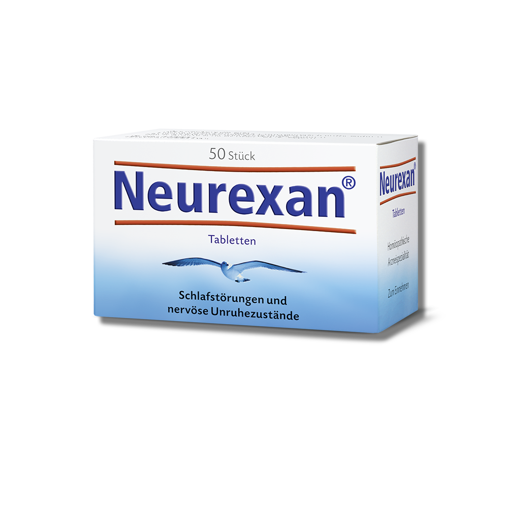

Neurexan

Normaler Preis: 14,21€
Aktuelles Angebot: 12,28€
Bei Fenistil Gel handelt es sich um ein Gel von GlaxoSmithKline Consumer Healthcare GmbH & Co. KG.
Egal ob Mückenstich oder Sonnenbrand – mit Fenistil Gel lässt sich der Sommer wieder unbeschwert genießen. Denn Fenistil Gel lindert nicht nur den lästigen Juckreiz,
sondern kühlt die Haut auch angenehm. Das Gel zieht schnell in die Haut ein und ist frei von Parfum oder Farbstoffen. Eben ein echter Klassiker für die ganze Familie. Fenistil Gel ist zur Selbstmedikation geeignet.
Anwendungshinweise
Bis zu 3-mal täglich dünn auf die betroffenen Hautstellen auftragen und leicht verreiben. Fenistil Gel eignet sich zur kurzfristigen Linderung von Juckreiz bei kleinen juckenden Insektenstichen auf intakter Haut Sonnenbrand.
Egal, ob Sie zu Hause oder unterwegs sind – Fenistil Gel ist einfach anzuwenden. Tragen Sie bis zu 3-mal täglich eine dünne Schicht auf die betroffene Stelle auf und verteilen Sie diese sanft mit den Fingern. Tritt nach 7 Tagen der Anwendung von Fenistil Gel keine Besserung ein, bitte Rücksprache mit dem Arzt halten.